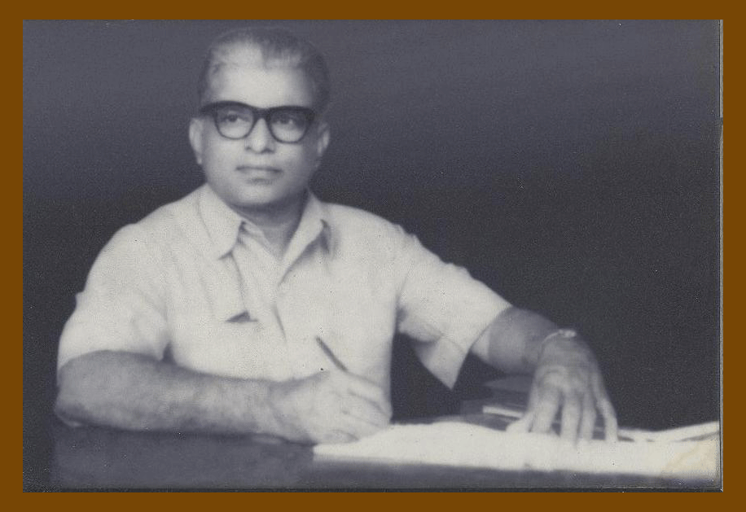
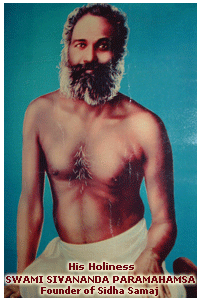
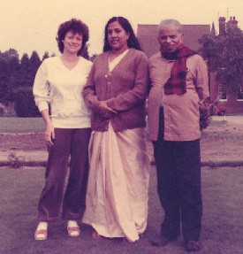
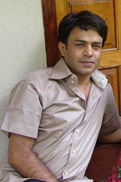

THE LATE Dr.B.P.PILLAI (FOUNDER DIRECTOR & PATRON)
Dr.B. Padmanabha Pillai was known simply as Guruji to the many people
who visited the Institute of Yogic Culture .. This is a respectful
and affectionate way of addressing a teacher. He also had the courtesy
title of "Dr. Pillai", or just "the Dr.", for he is also a practitioner
of Siddha medicine. This is a natural system of medicine derived from
the knowledge of the ancient sages, in which only natural ingredients
are used. On a more intimate level, Guruji was just "Daddy" to his
two children, Maya and Anand.
Guruji was born about the 20th June 1908, in Venganoor, a small village
on the outskirts of Thiruvananthapuram. When he was 17, he met Swami
Sivananda Paramahamsa, founder of Siddha Samaj of Kerala, whom he
refers to as Swamiji. This meeting set the pattern for the rest of
his life, for he decided there and then to follow Swamiji and the
yoga way of life.
Swami Sivananda Paramahamsa was a rare man, years ahead of his time.
He taught brotherhood, and his table rich and poor, high caste and
low caste sat and ate together. He showed no discrimination against
women and called all to follow a simple way of life devoid of all
pomp and ceremony. He travelled extensively, teaching all who came,
his simple method of Pranayama. He later established ashrams but his
main mission was to the ordinary people in the towns and villages.
He was a social revolutionary using the methods of yogis.
Having made his decision, Guruji encountered great resistance from
his family. He persisted and soon began his study of yoga under Swamiji's
guidance. Like Swamiji, he also studied and became an expert in the
Kerala martial art, Kalaripayattu. He later adapted the techniques
used to massage the practitioners of this martial art. The result
was his rejuvenating massage which is done using the feet. He became
physically strong but did not neglect the intellect and obtained a
Master's Degree in Sanskrit Language and Literature. He later spent
some years as the Chief Examiner for Patanjali Yoga at Sagar University.
By the age of 32, he had married Pankajakshi Amma, a Sanskrit pandit,
and established himself in society. His wife was highly devotional
and they meditated and studied religious texts together, but he desired
nothing more than to follow Swamiji and he intensified his yoga practice.
When Guruji was 37, Swamiji asked "Why are you doing all these practices;
what do you hope to attain?" Guruji answered that he was pursuing
the highest goal, union with the divine. Swamiji told that it was
time to reduce the practices and learn by immersing himself in every
day life. He took on greater responsibilities at the University of
Kerala where he was working and became Head of the department publishing
the University's books. During this period he did not abandon his
yoga practices altogether. He studied Siddha medicine under Swamiji's
guidance and from ancient texts, and became a proficient practitioner
of Siddha medicine.

GURU OF Dr.B.P.PILLAI
On the 21st of June 1949, Swamiji passed from his body. Before his physical departure, Swamiji promised that he would send Guruji help whenevr it was needed. Some years later, Guruji was sitting on the beach meditating. For months he had meditated, but had failed to come to the deeper knowledge that he crave. As he sat meditating, the beach sage, Poonthura Swami, who lived there, approached and struck him in the stomach. Immediately the blocked energy moved and he took another step in understanding. Swamiji had fulfilled his promise and has continued to do so ever since.On the death of his wife in 1968, Guruji, having no children, became a recluse and meditated more intently. He gained many powers and was able to help people troubled in body, mind and spirit. After about 2 ½ years, it was made clear to him that Swamiji required him to once again immerse himself in the world. Guruji cut off his long white beard and hair, and prepared to enter more fully in to everyday life.
In 1970, at the age of 62, Guruji once again married. At first there was much opposition to the marriage to Indira, one of the Institute's Yoga instructresses. Within two years they had two beautiful children, Maya and Anand. The critics lost their voices on seeing the children and Indira's happiness.
The Institute of Yogic Culture, of which Guruji was the Director, was founded in 1949 while he was still working at the University of Kerala. There were many hard periods and the institute had to move several times.Mainly due to Guruji's detrmined efforts the Institute gained full Government recognition in 1960. In 1962, he became the first Director of the newly constituted Department of Yogic Culture, under the Kerala State Government. Even then the troubles for the Institute were not over, for the land on which the Institute was situated was lost through a dispute in 1976. At that time Guruji moved all activities to his own home, which has subsequently been extended to cope with an increasing number of pupils. Now, happily, the dispute has been resolved, and title to the land has been regained.
People living both in the East and the West have neglected body, mind and spirit, by living unharmoniously. Guruji and the Institute are part of the movement that is helping both Indians and Westerners to re-establish within themselves the harmony that they have lost.
In 1966, Guruji was examined by The Institute of Psychic and Spiritual Research, Delhi, during his practice of pranayama and meditation. The following is an extract from a letter regarding this examination, written by Swami Nityachaitanaya Yati, the Director of the Institute.
"He was one of the few yogis who have succeeded in showing maximum relaxation of the brain and muscles during his meditation. The sound variations at different charkas appeared very intriguing to those who are unfamiliar with Siddha Vidya (Swamiji's system of spiritual disciplines). Dr. Karaan Singh, Nandaji and a number of other eminent gentlemen connected with our Institute, are very keen to see Sri Padmanabha Pillai".
Guruji was many things to many people - to his patients he was the "Dr", who uses traditional methods to cure their ills; to others he was a yoga teacher; and to many others he continued to be a spiritual guide or simply, a friend.
Guruji attained Samadhi at the age of 82,on 09/11/1990.

Mrs. INDIRA BAI .P (DIRECTOR)
Mrs.Indira Bai ,wife of Dr.B.P.Pillai, is the director and the main instructress,started her career with the institution in 1969.She qualified as an efficient yoga instructor and massaseur(foot pressure massage) under the tutelage of the late Mr. B.P.Pillai himself. Combining experience, erudition and compassion - essential qualities for a great yoga teacher,She has many students from India and also abroad.She had also accompanied Mr. B.P.Pillai,in many of his european tours and prooved her expertise in the feild.

PREMANAND (TRAINER)
Mr.Premanand, the son of The late Mr..B.P.Pillai and Indira Bai had his affiliation with the institution from his very young age and became a full fledged instructor from the age of 17 onwards.He is also an accomplished masseur.,with 21 years of experience .in the field..
He feels yoga helps todays people from the slip stream of modern day living and enables them to appreciate the simple things of life.It helps them think and feel and create self awareness.It is also a powerful tool for personal development.It is not just a physical exercise but a spiritual practice.a body mind integration-tht brings the body,mind and spirit togther.
He has high hopes for the institution and its future.He is very grateful
to his parents who also happens to be his teachers in not just guiding
him through the nuances of yoga but helping him take it as a form
of life.